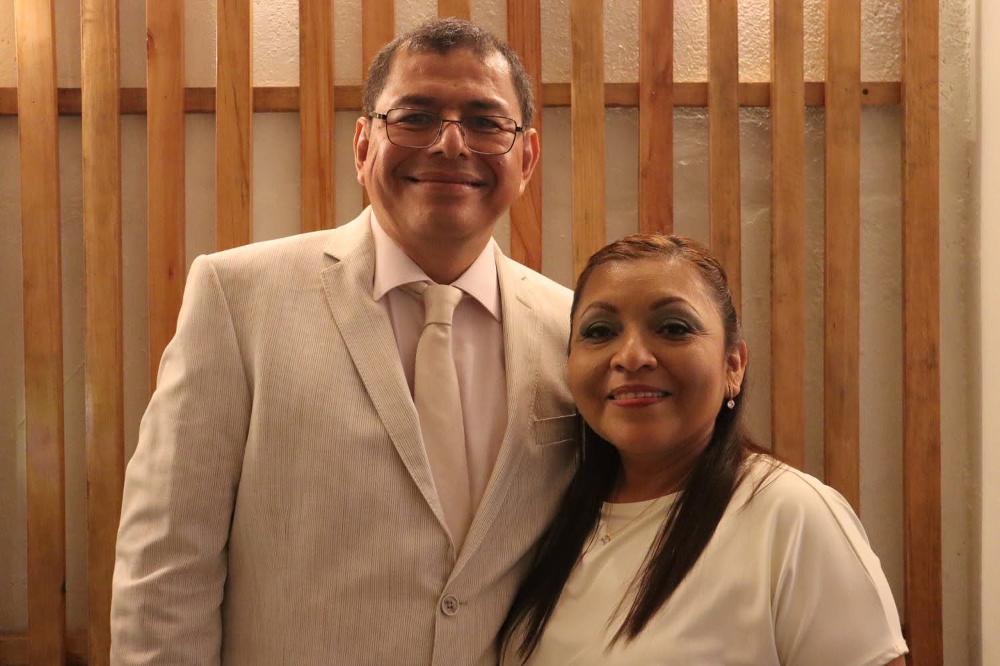
Los pastores Julio y Laurita de Martinez lideran con pasión, amor y visión, guiando a la iglesia a vivir una vida transformada por Dios.
Guía a la iglesia a la presencia de Dios a través de la música y adoración.
Reunión de mujeres en donde buscan a Dios y su Espíritu.
Formamos a las nuevas generaciones enseñándoles la palabra de Dios de forma dinámica.
Un espacio donde los jóvenes encuentran propósito, identidad y comunidad.
Personas comprometidas en enseñar la palabra de Dios con excelencia.
Grupos en hogares donde crecemos, compartimos y fortalecemos nuestra fe.
Equipos que hacen posible cada reunión y evento en la iglesia.
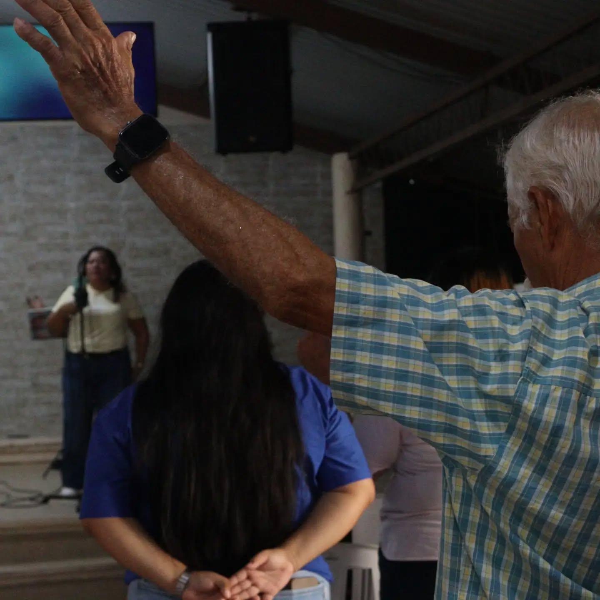
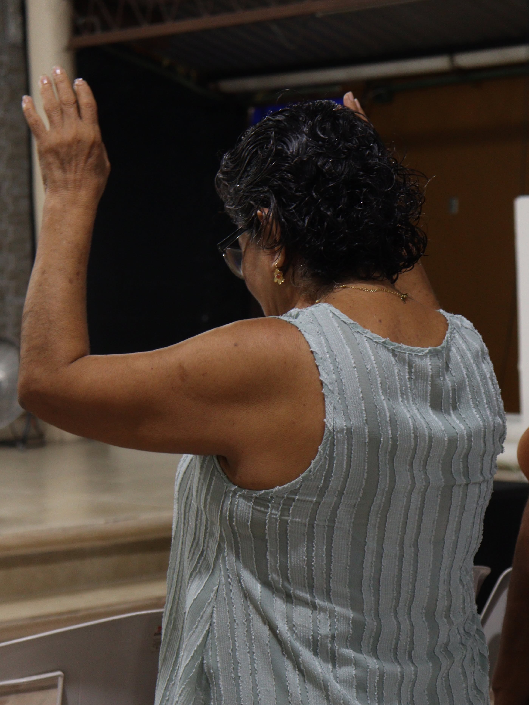
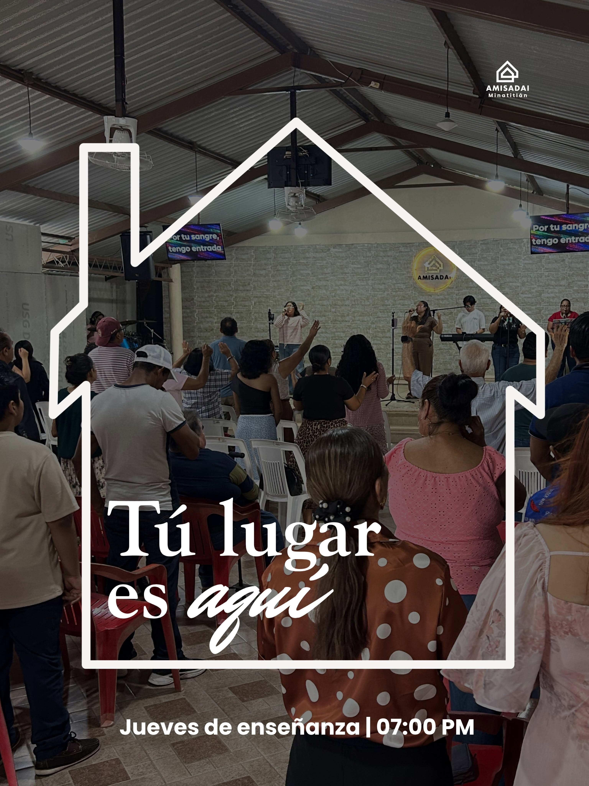
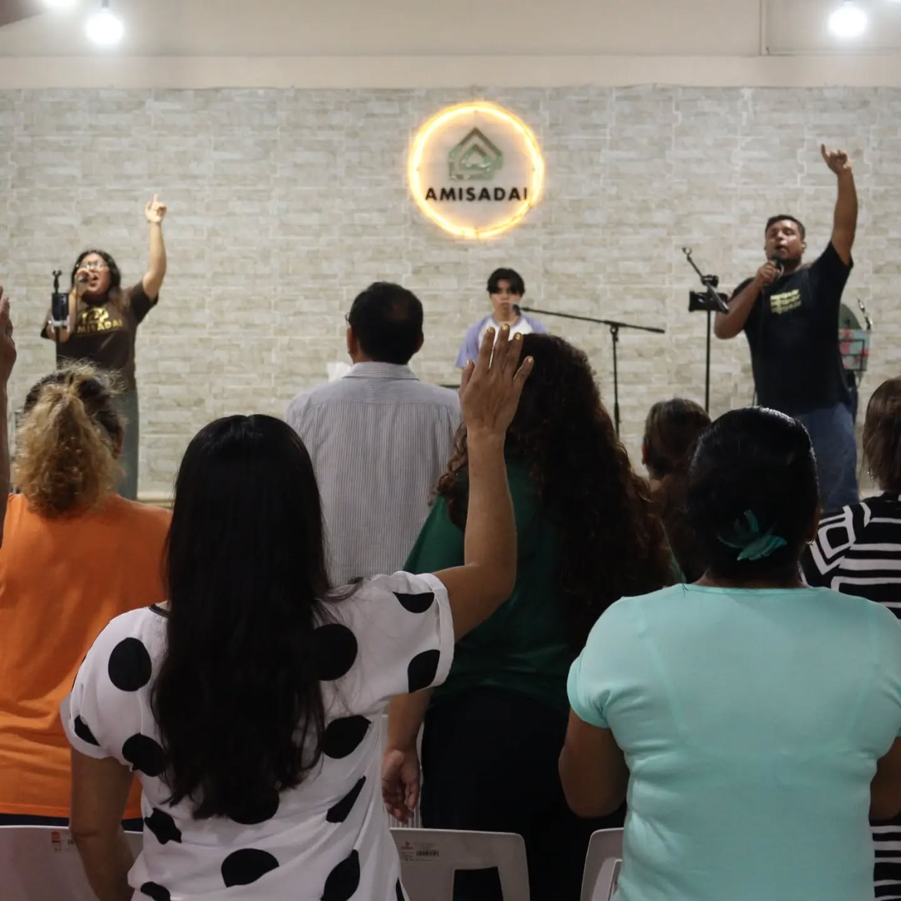
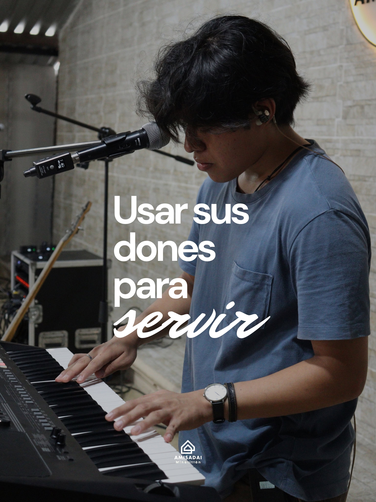
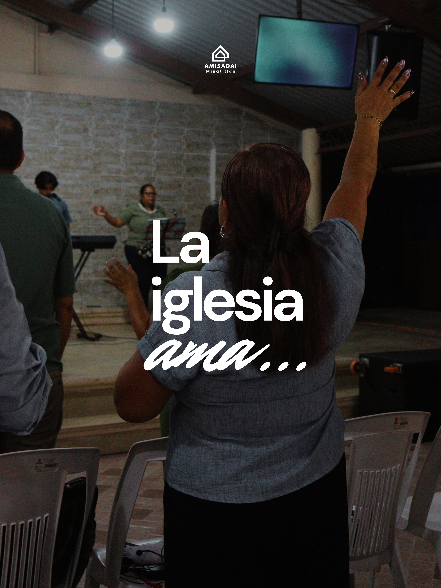
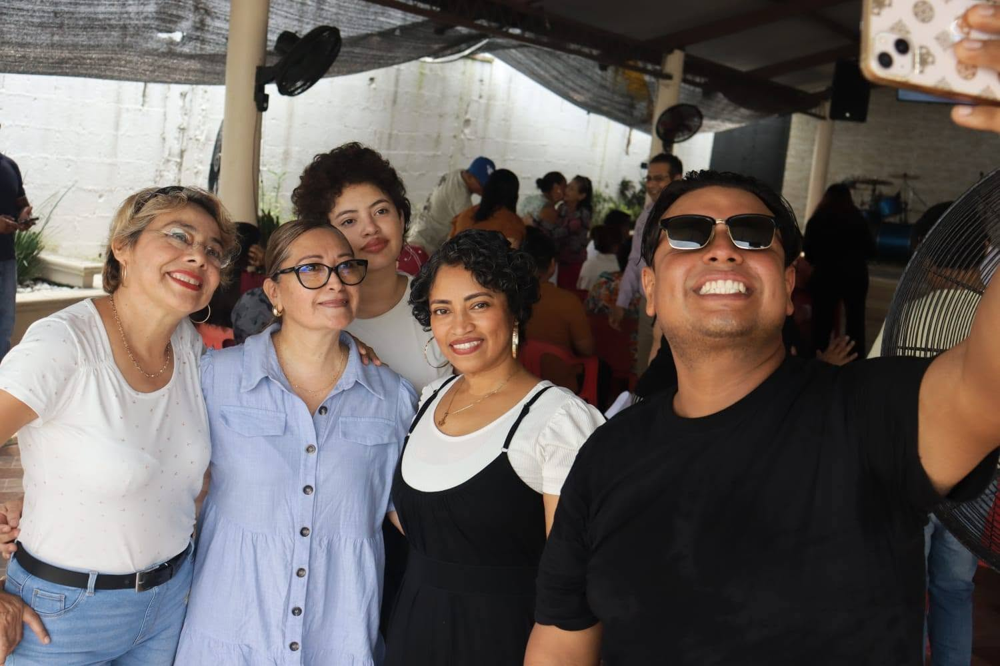
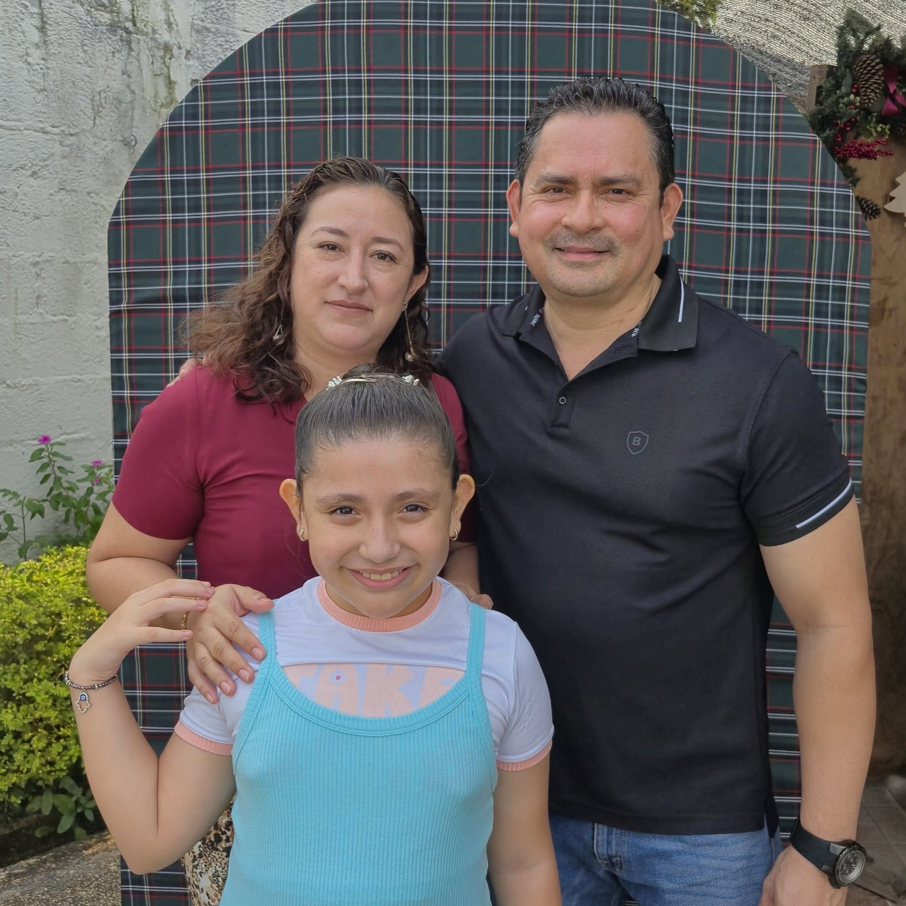
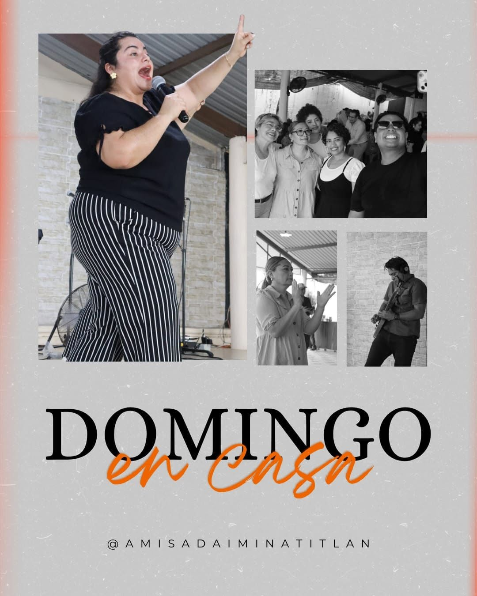
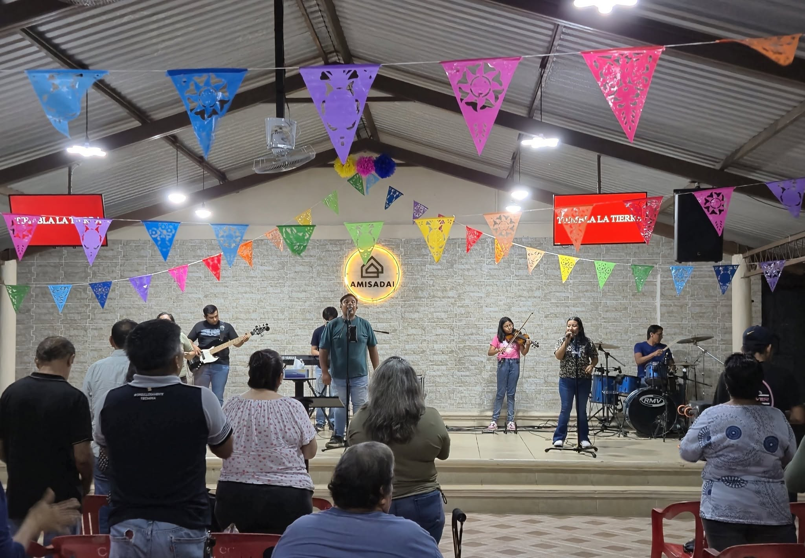
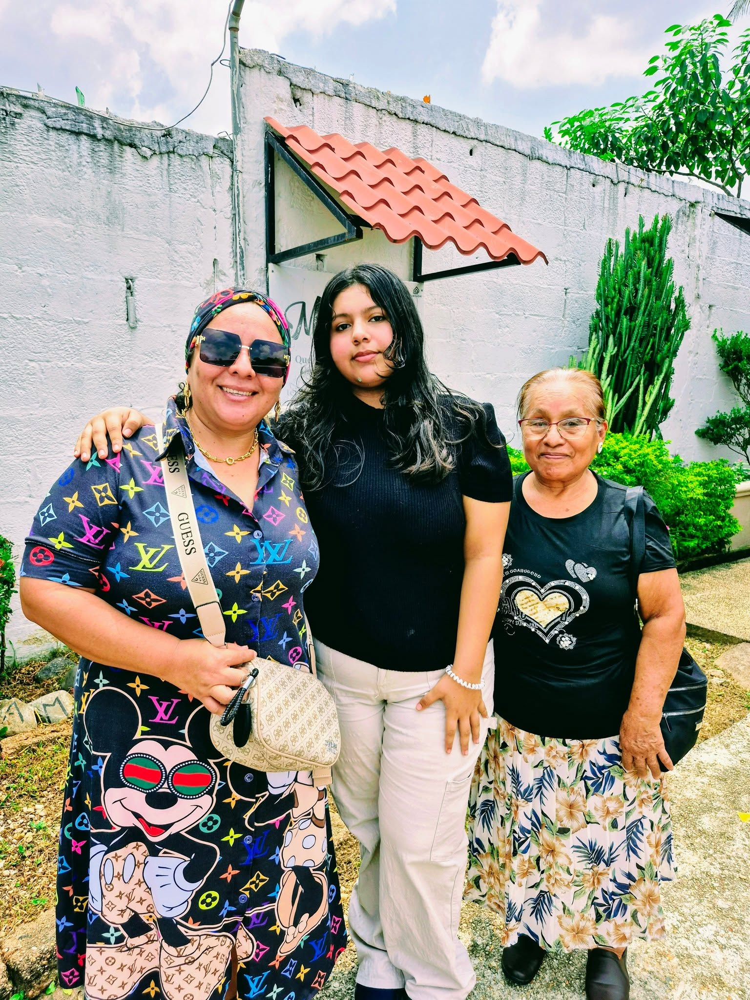
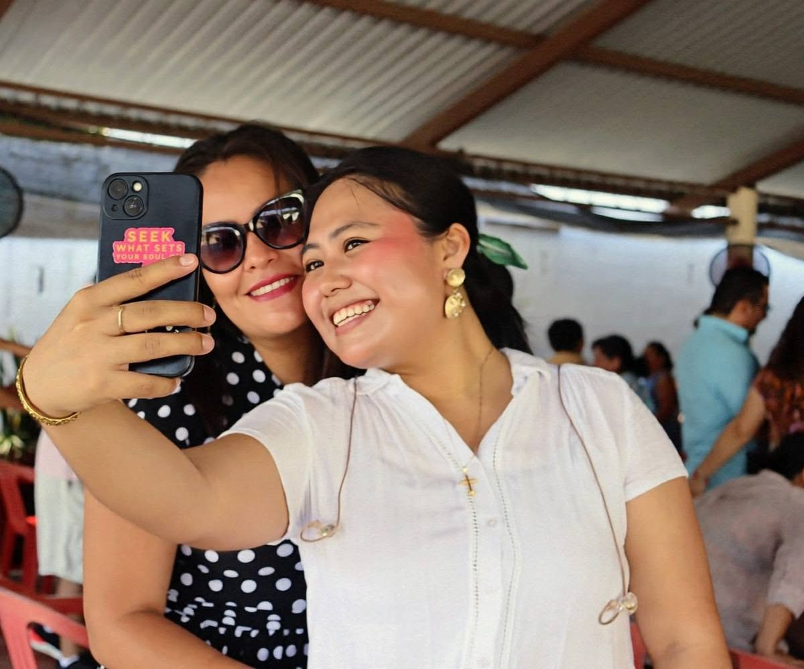
Alcanzar vidas, restaurar familias y formar discípulos comprometidos con Dios.